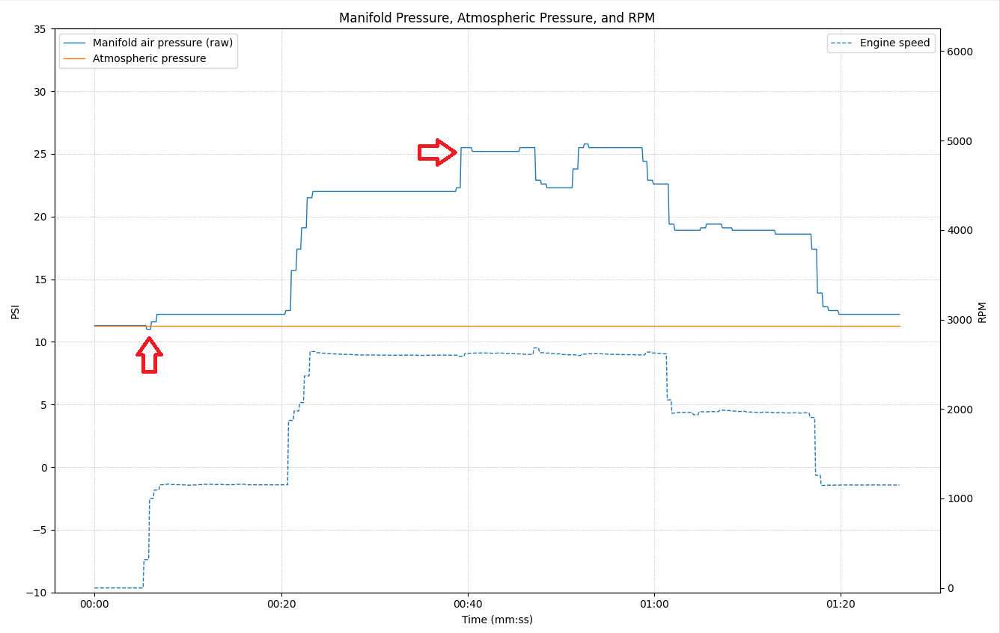

The Turbo Quick Chart displays intake manifold pressure, atmosphere pressure, and engine speed throughout the snapshot. This chart is essential for evaluating turbocharger performance, particularly for detecting turbo drag during engine cranking.
Proper snapshot capture procedure:
The chart displays intake manifold pressure on the Y-axis and time on the X-axis. Look for these key indicators:
Before cranking, with the key on and engine off, manifold pressure should be at atmospheric pressure (approximately 11.3 to 12.3 PSI at Colorado Front Range elevations).
During cranking, the engine acts as an air pump. A healthy turbo allows air to flow freely, resulting in a slight vacuum (negative gauge pressure) in the intake manifold.
Turbo drag occurs when the turbocharger bearings or compressor wheel have excessive resistance, restricting airflow during cranking.
The example above shows an engine cranking at 317 RPM with intake manifold pressure pulling 0.3 PSI below atmospheric pressure. This indicates a healthy turbo with minimal drag.
If the intake manifold pressure pulls 0.9 PSI or more below atmospheric pressure during cranking, this indicates a dragging turbo.
The Turbo chart also shows manifold pressure during engine operation:
At idle and light loads, manifold pressure will rise only slightly above atmospheric pressure.
Under load, the turbocharger compresses intake air, creating the highest manifold pressure (boost).
Higher loads result in higher boost pressure.
At Colorado elevations, 2.4L boost pressure will be around 25 PSI at full load.
A 3.4L will be around 30 PSI at full load.
For comprehensive turbo and engine performance analysis, also review: